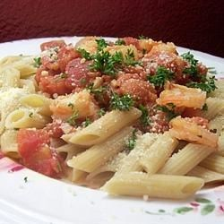
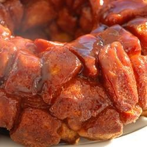

Delicious Recipes
Penne with Shrimp

Cook Time: 25 minutes
Prep Time: 10 minutes
Serves 8
Ingredients:
- 16 oz package of penne pasta
- 2 tablespoons olive oil
- 1/4 cup chopped red onion
- 1 tablespoon chopped garlic
- 1/4 cup white wine
- 2 (14.5 ounce) cans diced tomatoes
- 1 pound shrimp, peeled and deveined
- 1 cup grated Parmesan cheese
Buffalo Chicken Wings
Cook Time: 15 minutes
Prep Time: 10 minutes
Serves 8
Ingredients:
- 1 quart vegetable oil for deep frying
- 24 chicken wings, tips removed and wings cut in half at joint
- 4 tablespoons butter
- 1 tablespoon distilled white vinegar
- 5 tablespoons hot pepper sauce
- salt and pepper to taste
Monkey Bread

Cook Time: 35 minutes
Prep Time: 5 minutes
Serves 12
Ingredients:
- 3 (10 ounce) packages refrigerated biscuit dough
- 3/4 cup white sugar
- 3 tablespoons ground cinnamon
- 1/2 cup margarine
- 3/4 cup white sugar